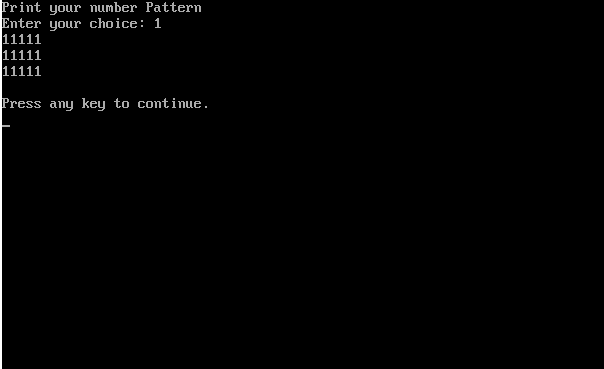

#include#include #include void main() { int choice,i,j; clrscr(); printf("print patternfor nested loop\n"); printf("enter pattern choice"); scanf("%d",&choice); switch(choice) { case 1: for(i=1;i<=3;i++) { for(j=1;j<=5;j++) { printf("1"); } printf("\n"); } break; default: printf("Invalid Choice"); } delay(5000); }
